Dr.-Ing. Kunyu Peng
I work on deep learning-based multi-modal video understanding and trustworthy human-centric AI, with focus on language-guided video understanding (referring atomic action recognition and referring human action segmentation in multi-person scenarios), open-set skeleton-based action recognition, open-set domain generalization, label noise learning, and multi-modal large language models (MLLMs). My methodological contributions include cross-modal uncertainty-aware logits calibration with channel-normalized distance refinement (CrossMax) for open-set action recognition, cross-stream agent attention over video, text, and location-semantic streams for referring atomic action recognition (RefAtomNet / RefAtomNet++), holistic–partial Fourier-conditioned diffusion with bidirectional cross-input gated HP-xLSTM for fine-grained temporal action segmentation (HopaDIFF), evidential bi-level hardest-domain scheduling in meta-learning for open-set domain generalization, and hyperbolic space category prototypes with prompt augmentation for hierarchical representation learning under noisy labels.
Looking forward, I am pursuing interdisciplinary research at the intersection of MLLMs, video understanding, motion generation and editing, and trustworthy AI, including multi-robot collaborative video perception and reasoning with uncertainty communication and life-long shared memory banks, EgoPano human-centric collaborative reasoning that combines panoramic and egocentric views for cyber-physical situation awareness, MLLM-based online coaching for first-aid and rehabilitation for users without prior experience, and unified text-guided models for multi-human 3D motion generation, editing, and understanding — building on our InterEdit dataset for text-guided multi-human motion editing. My applications span rehabilitation, first-aid training, assistive systems for visually impaired individuals, digital aging, cyber-physical security monitoring, and human-robot cooperation in smart homes and circular factory environments.
About
I received my PhD in Informatics from Karlsruhe Institute of Technology in 2024, where my dissertation focused on Towards Generalizable Deep Learning-Based Human Action Recognition. Before that, I completed my MSc in Electrical Engineering and Information Technology at KIT and a BSc in Automation at Beijing Institute of Technology.
My broader goal is to build robust, generalizable, and trustworthy multi-modal perception systems that reason about human behavior across domains, sensors, and deployment conditions — with applications in healthcare, rehabilitation, assistive technologies, and human-robot cooperation.
News
- 2026: Serving as Associated Editor for IEEE RA-L, IV, and ITSC.
- 2025: Paper accepted at NeurIPS 2025 as Spotlight (HopaDIFF).
- 2025: Received ICLR Notable Reviewer Award and CVPR Outstanding Reviewer Award.
- 2025: Started visiting research collaboration at INSAIT with Prof. Luc Van Gool and Prof. Danda Paudel.
- 2024: Received NeurIPS Top Reviewer Award and ICRA Best Paper Finalist recognition.
Research Interests
My research lies in deep learning-based multi-modal video understanding and trustworthy challenges in computer vision, including label noise learning, domain generalization, and open-world recognition. I develop methodologies that address multi-modal interaction tasks and close the gap between training distributions and real-world deployment conditions.
My key methodological contributions include:
- Cross-modal uncertainty-aware logits calibration to improve awareness of unseen classes for open-set action recognition.
- Text-guided holistic-partial Fourier-conditioned diffusion networks for human action segmentation in multi-person scenarios.
- Text-guided atomic video action recognition using cross-stream agent attention.
- Bi-level hardest-domain scheduling in meta-learning for advanced open-set domain generalization.
- Hyperbolic space prototypes for label denoising in domain-agnostic meta-learning under noisy labels.
Future Research Directions
My future agenda focuses on interdisciplinary advancements at the intersection of multi-modal large language models (MLLMs), video understanding, motion generation and understanding, and trustworthy AI, with applications in rehabilitation, first-aid training, assistance for visually impaired individuals, and digital aging:
- Uncertainty-aware multi-robot collaborative spatial reasoning and human activity understanding — modeling uncertainty propagation across multiple cooperating robots via structured communication, multimodal fusion, and hyperbolic memory graphs for reliable long-term spatial knowledge.
- Trustworthy human action-aware MLLMs for cybersecurity, first-aid, and rehabilitation — joint reasoning across egocentric and exocentric perspectives, interactive multimodal training assistants, and parameter-efficient tuning with evidential uncertainty estimation.
- Text-guided multi-human interaction, action editing, and understanding — MLLM- and diffusion-based frameworks for multi-human motion understanding, editing, and generation with interaction-aware multimodal representations.
Reviewer Awards
Recognized for service to the computer vision and machine learning community:
Professional Experience
Visiting Researcher · INSAIT
Collaboration with Prof. Luc Van Gool and Prof. Danda Paudel on egocentric and panoramic video understanding and action understanding.
Post-Doctoral Researcher · Karlsruhe Institute of Technology
Research on trustworthy challenges in human-centric AI, vision-language models, multi-agent systems, and 2D–3D co-reasoning.
PhD Candidate · Karlsruhe Institute of Technology
Research on trustworthy human action understanding and vision-language models.
Intern · Bosch, Leonberg
Worked on multimodal semantic segmentation and monocular depth estimation for automated vehicles.
Research Projects
SmartAGE
Deep learning-based activity analysis for elderly people, funded by the Carl-Zeiss-Foundation, in collaboration with Heidelberg University, Frankfurt University, and Mannheim University.
SFB 1574 Circular Factory
Leading the PI work package of a DFG-funded project on trustworthy human perception for reliable robot–human cooperation in circular factory environments, with the University of Stuttgart.
HeiKA-Star PACo
Research on multimodal human cognitive status estimation and reasoning from video data.
Education
PhD in Informatics · KIT
Advisor: Prof. Dr.-Ing. Rainer Stiefelhagen
MSc in Electrical Engineering and Information Technology · KIT
Advisors: Prof. Dr.-Ing. Michael Heizmann and Prof. Dr.-Ing. Christoph Stiller
BSc in Automation · Beijing Institute of Technology
Advisor: Prof. Yuan Li
Publications
* denotes shared first authorship; + denotes corresponding author.
Each card includes a placeholder for a key figure — drop images into a figs/
folder with the filenames shown below (e.g., figs/hopadiff.png) to have them
render automatically.
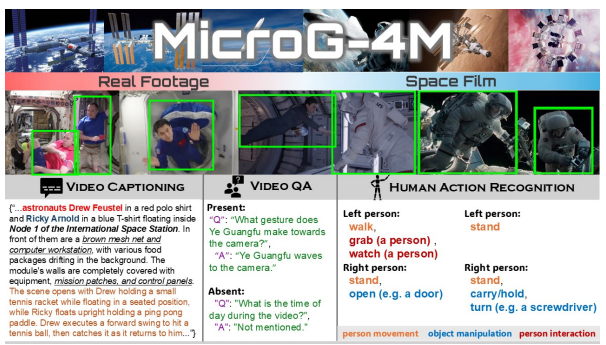
(Go Beyond Earth)';" />Go Beyond Earth: Understanding Human Actions and Scenes in Microgravity Environments
Introduces a new benchmark for human action and scene understanding in microgravity environments, a highly under-explored domain with unusual motion patterns. Opens a new direction for robust video understanding under extreme distribution shifts.
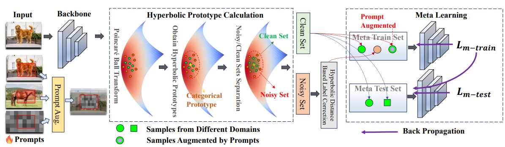
(HyProMeta)';" />Mitigating Label Noise using Prompt-Based Hyperbolic Meta-Learning in Open-Set Domain Generalization
Introduces the OSDG under Noisy Labels (OSDG-NL) setting with benchmarks derived from PACS, DigitsDG, and DomainNet. The proposed HyProMeta framework incorporates hyperbolic category prototypes and a new-category agnostic prompt to jointly learn noise-aware representations in hyperbolic space, achieving state-of-the-art across all established benchmarks.
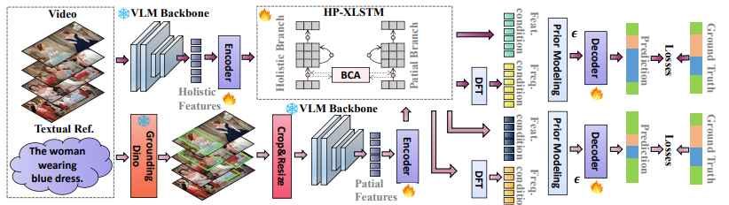
(HopaDIFF)';" />HopaDIFF: Holistic-Partial Aware Fourier Conditioned Diffusion for Referring Human Action Segmentation in Multi-Person Scenarios
Proposes textual reference-guided human action segmentation for multi-person scenarios. Introduces RHAS133, the first dataset for this task (133 movies, 137 fine-grained actions). HopaDIFF combines a cross-input gated HP-xLSTM with Fourier conditioning for effective temporal control, achieving state-of-the-art on RHAS133.
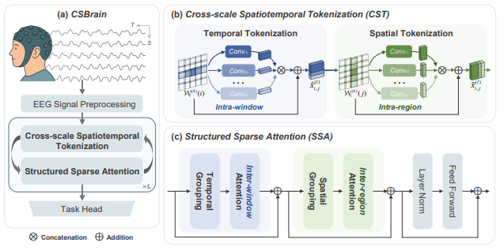
(CSBrain)';" />CSBrain: A Cross-scale Spatiotemporal Brain Foundation Model for EEG Decoding
A cross-scale spatiotemporal foundation model for EEG decoding that jointly captures multi-resolution brain dynamics, demonstrating strong transfer performance across multiple EEG tasks and datasets.
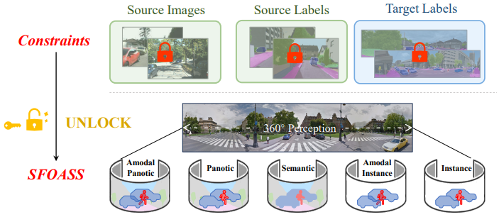
(Unlocking Constraints)';" />Unlocking Constraints: Source-Free Occlusion-Aware Seamless Segmentation
Addresses source-free occlusion-aware seamless segmentation, bridging panoramic perception with realistic occlusion handling without requiring access to source-domain data.
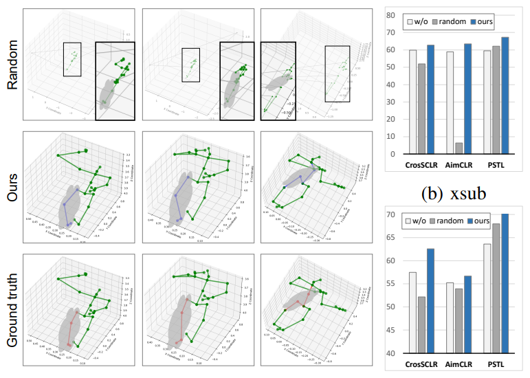
(SSL Occluded)';" />Exploring Self-supervised Skeleton-based Action Recognition in Occluded Environments
Studies self-supervised skeleton-based action recognition in challenging occluded environments, proposing representation learning strategies that remain robust when body joints are partially missing.
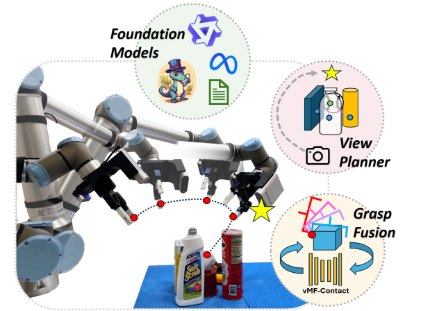
(VISO-Grasp)';" />VISO-Grasp: Vision-Language Informed Spatial Object-centric 6-DoF Active View Planning and Grasping in Clutter and Invisibility
Combines vision-language models with object-centric spatial reasoning for 6-DoF active view planning and grasping in cluttered and partially-invisible scenes.
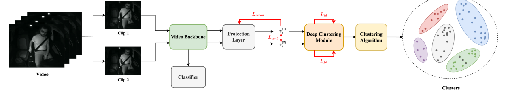
(Driver Noisy)';" />Exploring Video-Based Driver Activity Recognition under Noisy Labels
Studies video-based driver activity recognition under noisy label conditions, contributing a label-noise-aware training pipeline that substantially improves reliability of in-vehicle action models.
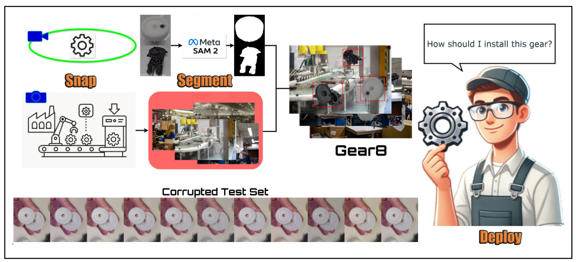
(Snap Segment Deploy)';" />Snap, Segment, Deploy: A Visual Data and Detection Pipeline for Wearable Industrial Assistants
Proposes a practical visual data collection, segmentation, and deployment pipeline tailored to wearable industrial assistants, enabling rapid adaptation to new objects and environments.
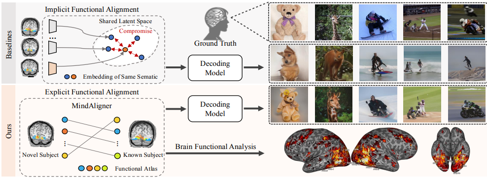
(MindAligner)';" />MindAligner: Explicit Brain Functional Alignment for Cross-Subject Visual Decoding from Limited fMRI Data
Proposes explicit brain functional alignment for cross-subject visual decoding from limited fMRI data, enabling stronger generalization across subjects with fewer training samples.
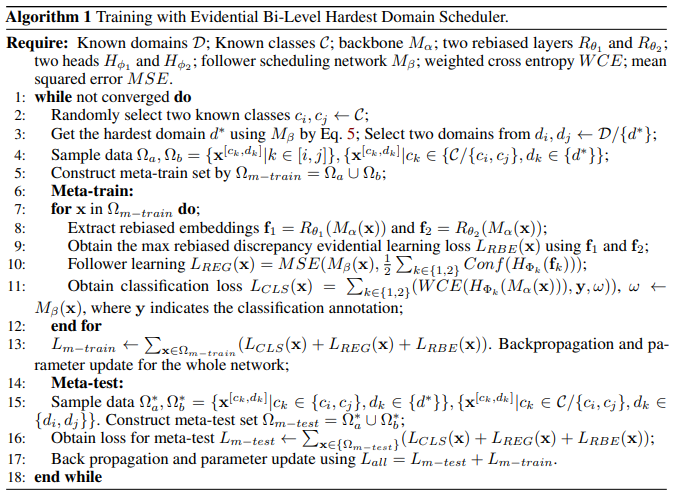
(EBHDS)';" />Advancing Open-Set Domain Generalization Using Evidential Bi-Level Hardest Domain Scheduler
Addresses Open-Set Domain Generalization (OSDG), where models must generalize across domains while identifying unknown categories. EBHDS dynamically selects the hardest domains in a meta-learning framework and incorporates evidential uncertainty estimation for better separation of known and unknown classes.
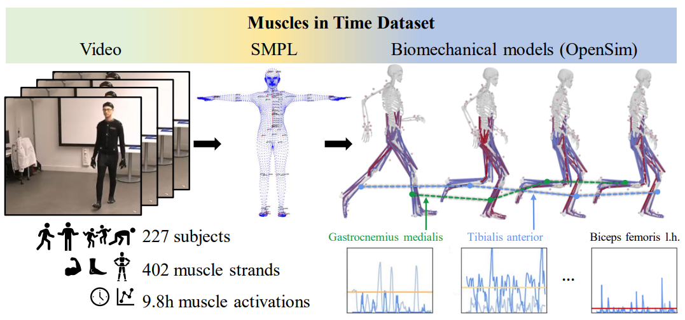
(Muscles in Time)';" />Muscles in Time: Learning to Understand Human Motion In-Depth by Simulating Muscle Activations
Introduces a framework for learning in-depth human motion understanding by simulating muscle activations, linking biomechanics and data-driven motion representation.
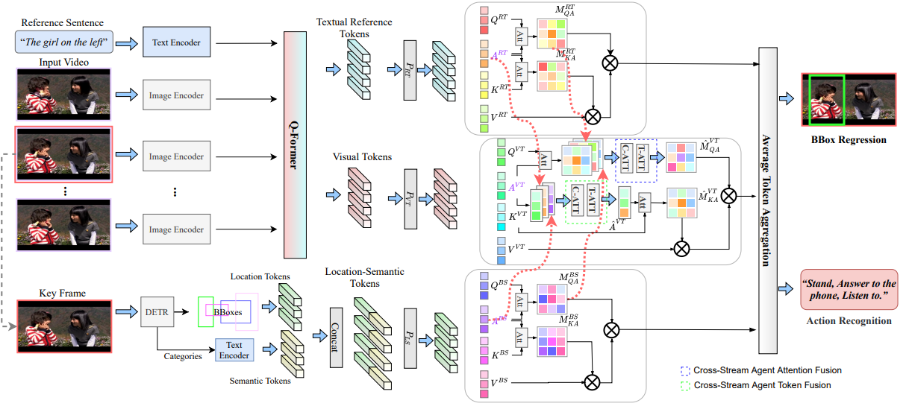
(RefAtomNet)';" />Referring Atomic Video Action Recognition
Introduces Referring Atomic Video Action Recognition (RAVAR), which identifies the atomic action of a target person guided by textual descriptions. Contributes the RefAVA dataset (36,630 instances) and RefAtomNet, a cross-stream attention framework over video, text, and location-semantic streams.
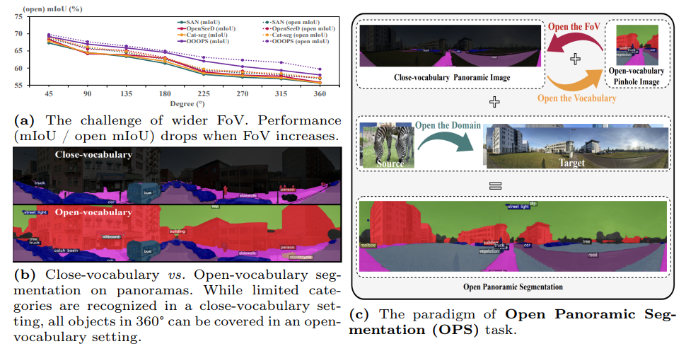
(Open Panoramic Seg.)';" />Open Panoramic Segmentation
Formalizes open-vocabulary panoramic semantic segmentation and proposes methodology that generalizes to unseen categories in 360° imagery.
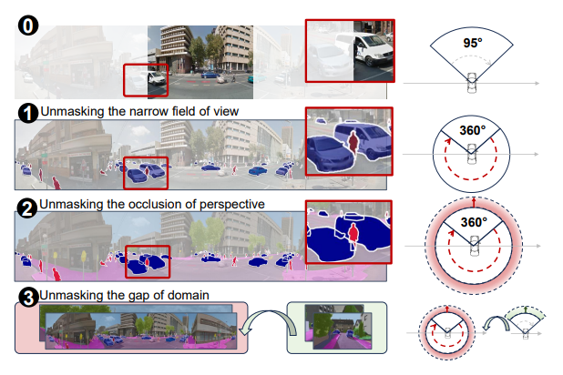
(Occlusion Seamless)';" />Occlusion-Aware Seamless Segmentation
Addresses seamless segmentation under occlusion by explicitly modeling visibility, achieving improved boundary accuracy and robustness in panoramic imagery.
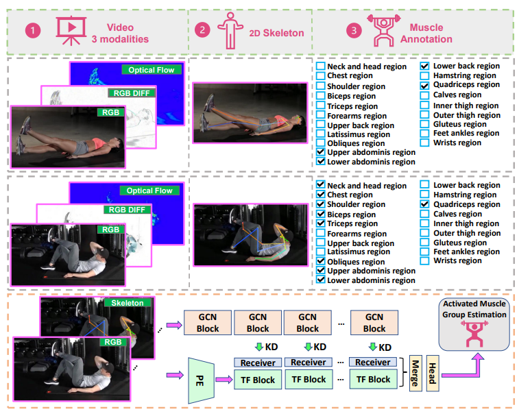
(Activated Muscle Group)';" />Towards Activated Muscle Group Estimation in the Wild
Introduces activated muscle group estimation from in-the-wild video, a novel task that bridges sports science and computer vision for detailed physical activity analysis.
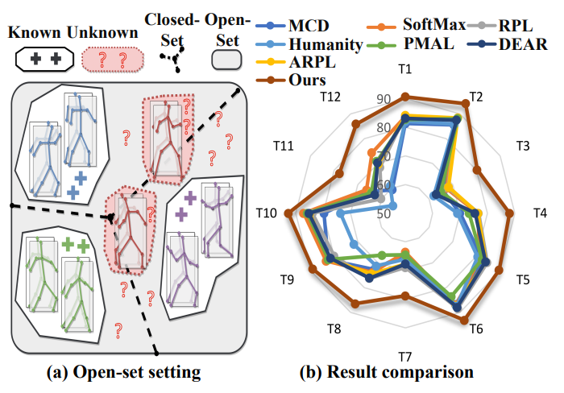
(CrossMax)';" />Navigating Open Set Scenarios for Skeleton-Based Action Recognition
Formalizes the Open-Set Skeleton-based Action Recognition (OS-SAR) task and proposes CrossMax, which aligns joints, bones, and velocities via cross-modal discrepancy suppression and distance-based logits refinement.
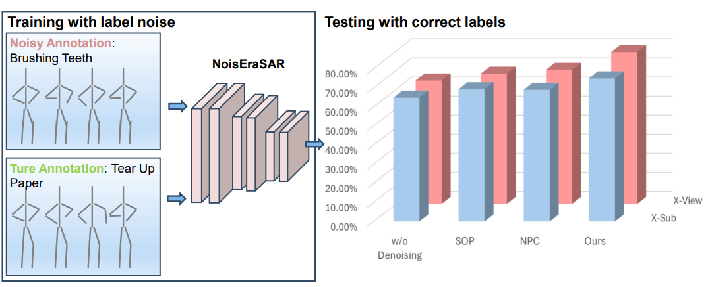
(Noisy Skeleton)';" />Skeleton-Based Human Action Recognition with Noisy Labels
Studies skeleton-based action recognition under noisy label conditions and proposes a noise-robust training strategy tailored to skeleton data, contributing to trustworthy action recognition pipelines.
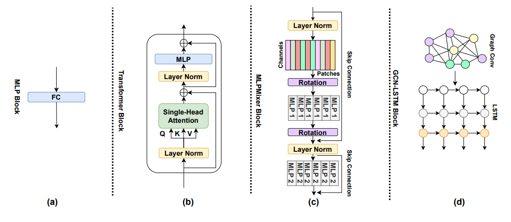
(Quo Vadis)';" />Position: Quo Vadis, Unsupervised Time Series Anomaly Detection?
A position paper critically reviewing the state of unsupervised time series anomaly detection, highlighting evaluation pitfalls and pointing toward more rigorous benchmarking practices.
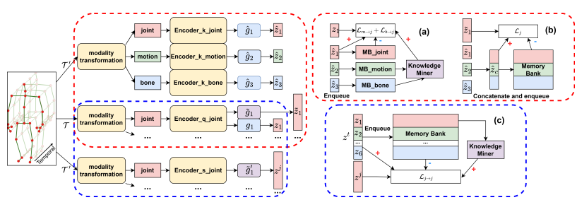
(Multi-Modal SSL)';" />Elevating Skeleton-Based Action Recognition with Efficient Multi-Modality Self-Supervision
Proposes an efficient multi-modality self-supervised learning framework for skeleton-based action recognition, improving representation quality with minimal supervision cost.
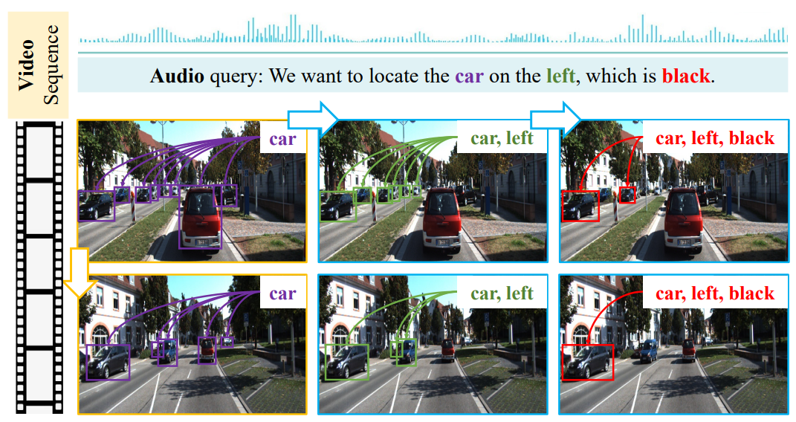
(EchoTrack)';" />EchoTrack: Auditory Referring Multi-Object Tracking for Autonomous Driving
Introduces auditory referring multi-object tracking for autonomous driving, grounding audio descriptions to on-road objects for a richer multi-modal driving perception stack.
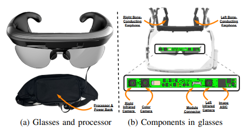
(MateRobot)';" />MateRobot: Material Recognition in Wearable Robotics for People with Visual Impairments
Develops material recognition for wearable robotics aimed at users with visual impairments, expanding assistive perception capabilities beyond object category alone.
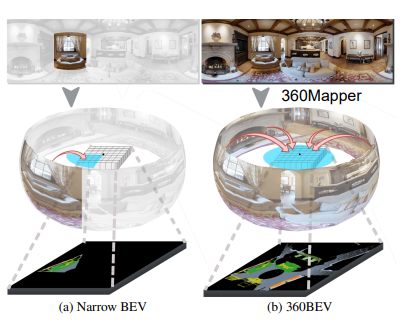
(360BEV)';" />360BEV: Panoramic Semantic Mapping for Indoor Bird's-Eye View
Proposes 360BEV, a framework for constructing panoramic semantic bird's-eye view representations for indoor scenes, advancing holistic spatial understanding.
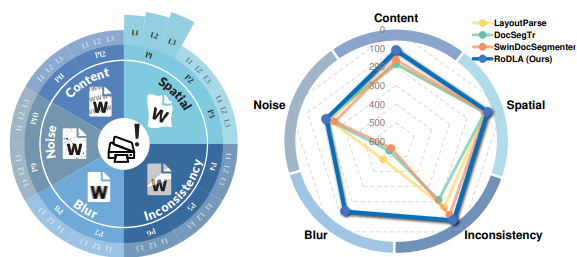
(RoDLA)';" />RoDLA: Benchmarking the Robustness of Document Layout Analysis Models
Establishes a systematic robustness benchmark for document layout analysis models, exposing how real-world perturbations affect downstream document understanding performance.
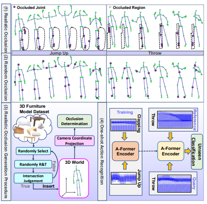
(One-Shot Occlusion)';" />Delving Deep Into One-Shot Skeleton-Based Action Recognition With Diverse Occlusions
Provides a comprehensive benchmark and proposes occlusion-aware mechanisms for one-shot skeleton-based action recognition, substantially improving recognition under realistic occlusion patterns.
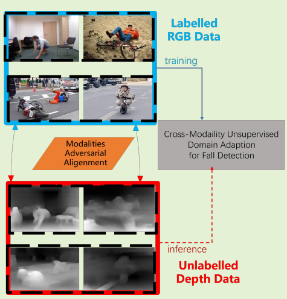
(RGB2Depth Fall)';" />Toward Privacy-Supporting Fall Detection via Deep Unsupervised RGB2Depth Adaptation
Proposes deep unsupervised RGB-to-depth domain adaptation for privacy-preserving fall detection, enabling use of publicly available RGB data while deploying on privacy-safe depth sensors.
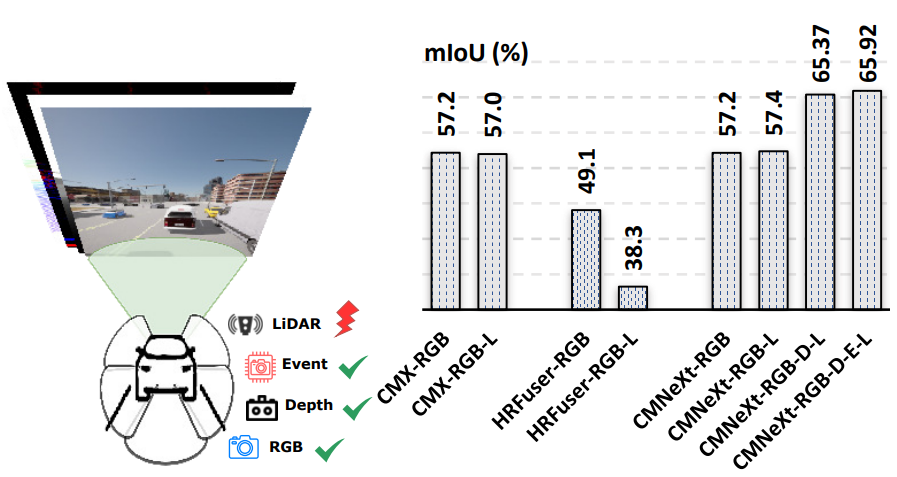
(Arbitrary-Modal)';" />Delivering Arbitrary-Modal Semantic Segmentation
Introduces a unified framework for arbitrary-modal semantic segmentation that flexibly handles any combination of sensor modalities at inference time.
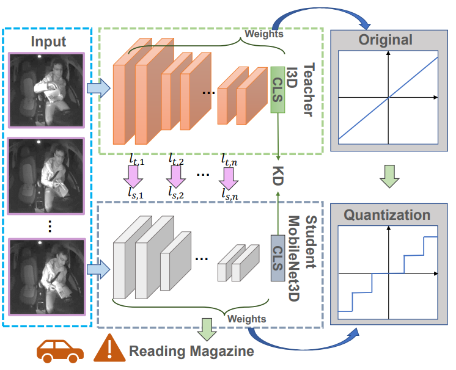
(Quantized Distillation)';" />Quantized Distillation: Optimizing Driver Activity Recognition Models for Resource-Constrained Environments
Combines quantization and knowledge distillation to deliver compact, efficient driver activity recognition models suitable for resource-constrained in-vehicle deployment.
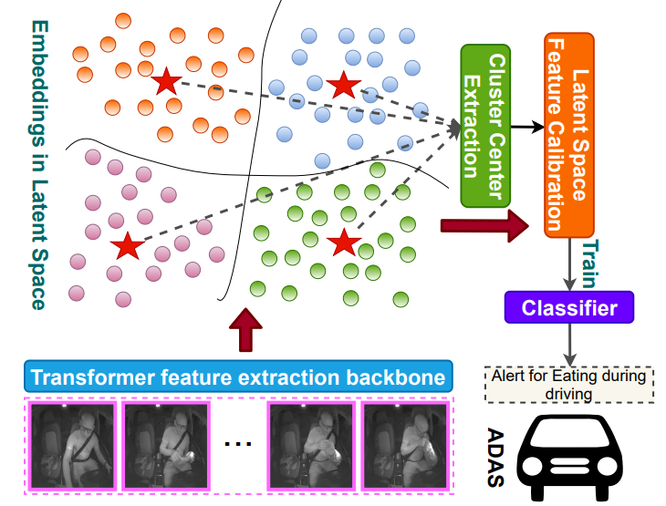
(TransDARC)';" />TransDARC: Transformer-based Driver Activity Recognition with Latent Space Feature Calibration
Introduces a transformer-based driver activity recognition model with latent-space feature calibration, improving both accuracy and reliability of in-vehicle behavior understanding.
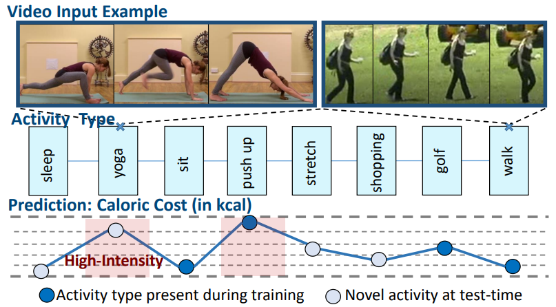
(Energy Expenditure)';" />Should I Take a Walk? Estimating Energy Expenditure from Video Data
Tackles energy expenditure estimation directly from video, connecting visual human activity analysis with applications in fitness tracking and digital health.
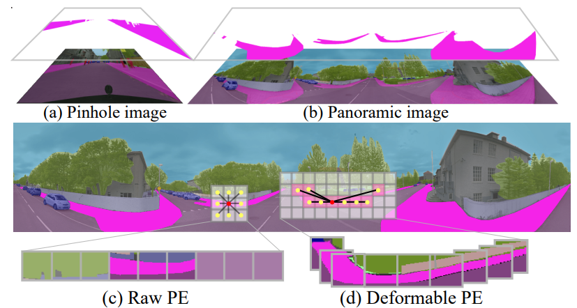
(Bending Reality)';" />Bending Reality: Distortion-aware Transformers for Adapting to Panoramic Semantic Segmentation
Proposes distortion-aware transformers that adapt perspective-trained models to panoramic semantic segmentation, directly handling the geometric distortion of 360° imagery.
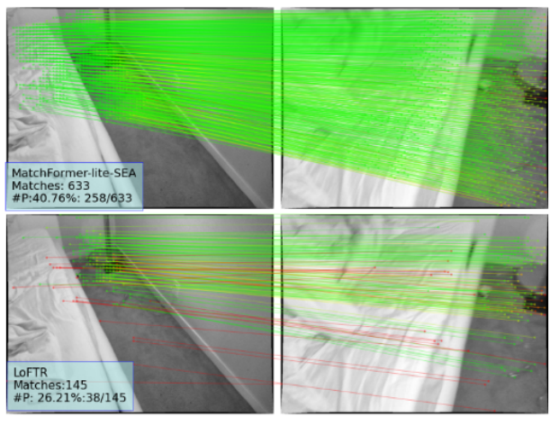
(MatchFormer)';" />MatchFormer: Interleaving Attention in Transformers for Feature Matching
Introduces interleaved attention in transformer architectures for dense feature matching, improving correspondence quality in challenging matching scenarios.
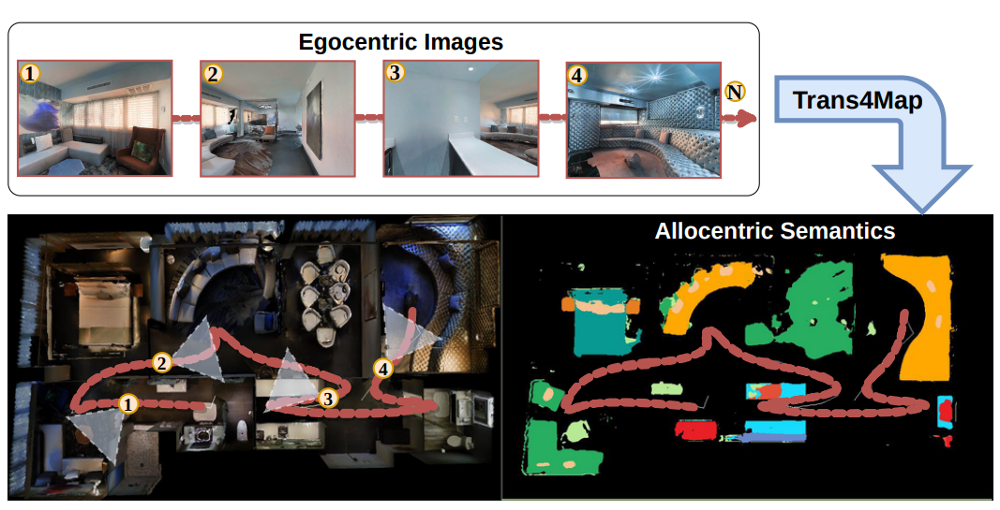
(Trans4Map)';" />Trans4Map: Revisiting Holistic Bird's-Eye-View Mapping from Egocentric Images to Allocentric Semantics with Vision Transformers
Revisits holistic bird's-eye-view semantic mapping from egocentric imagery using vision transformers, enabling richer allocentric scene understanding.
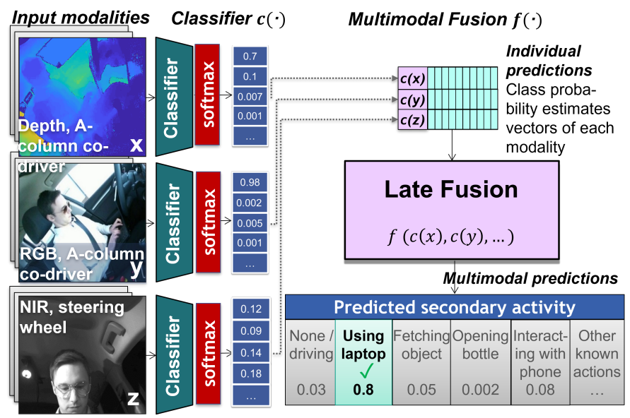
(Decision Fusion)';" />A Comparative Analysis of Decision-Level Fusion for Multimodal Driver Behaviour Understanding
Systematically compares decision-level fusion strategies for multimodal driver behavior understanding, providing practical guidance for sensor-fusion system designers.
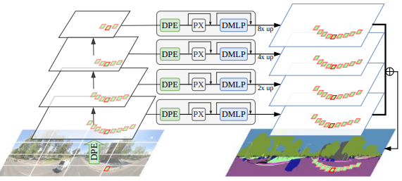
(Domain Shift)';" />Behind Every Domain There is a Shift: Adapting Distortion-Aware Vision Transformers for Panoramic Semantic Segmentation
Extends distortion-aware vision transformers with systematic domain-adaptation strategies to bridge perspective and panoramic semantic segmentation under realistic shifts.
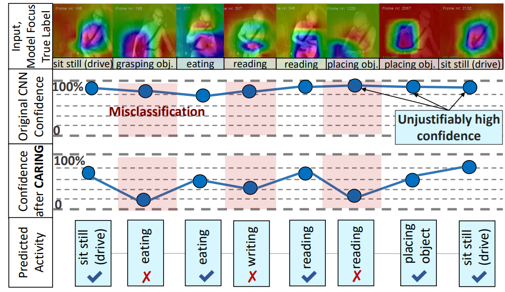
(Confidence Calibration)';" />Is My Driver Observation Model Overconfident? Input-Guided Calibration Networks for Reliable and Interpretable Confidence Estimates
Proposes input-guided calibration networks that deliver reliable and interpretable confidence estimates for driver observation models, a key step toward trustworthy in-vehicle AI.
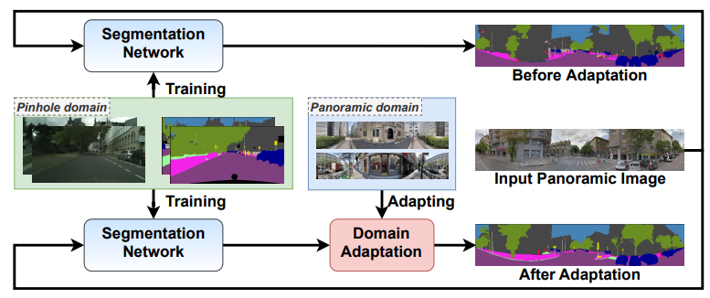
(Transfer Beyond FoV)';" />Transfer Beyond the Field of View: Dense Panoramic Semantic Segmentation via Unsupervised Domain Adaptation
Tackles dense panoramic semantic segmentation via unsupervised domain adaptation from narrow-FoV data, enabling holistic scene understanding without panoramic annotations.
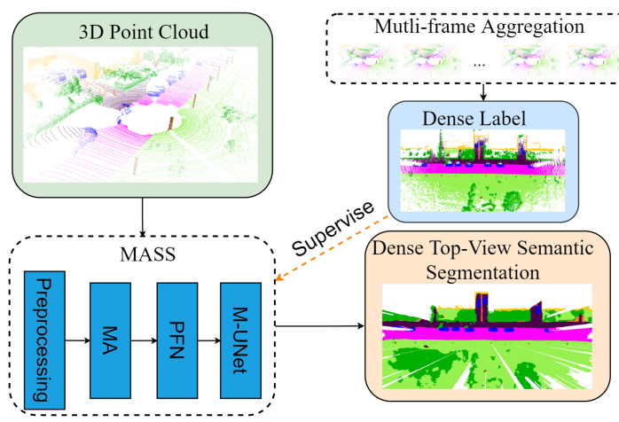
(MASS)';" />MASS: Multi-Attentional Semantic Segmentation of LiDAR Data for Dense Top-View Understanding
Introduces MASS, a multi-attentional semantic segmentation framework for LiDAR-based dense top-view understanding in autonomous driving.
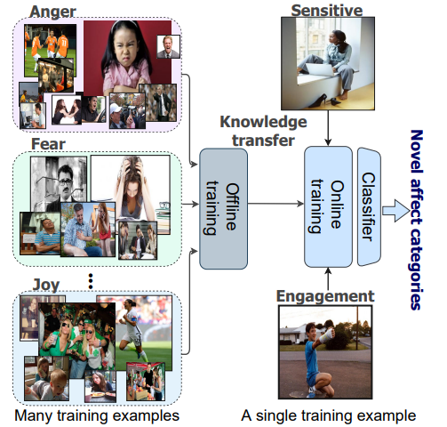
(Affect-DML)';" />Affect-DML: Context-Aware One-Shot Recognition of Human Affect using Deep Metric Learning
Proposes a context-aware deep metric learning framework for one-shot human affect recognition, tackling the fundamental data scarcity of fine-grained affective states.
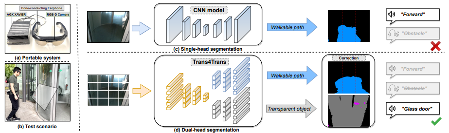
(Trans4Trans)';" />Trans4Trans: Efficient Transformer for Transparent Object and Semantic Scene Segmentation in Real-World Navigation Assistance
Develops an efficient transformer for jointly handling transparent objects and semantic scene segmentation, targeting real-world navigation assistance for users with visual impairments.
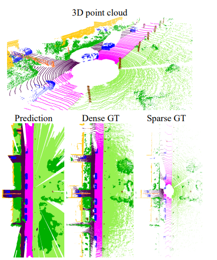
(PillarSegNet)';" />PillarSegNet: Pillar-based Semantic Grid Map Estimation using Sparse LiDAR Data
Introduces PillarSegNet, a pillar-based framework for estimating semantic grid maps from sparse LiDAR data, advancing efficient dense scene representation for autonomous driving.
Academic Service
- 2026: Associated Editor, IEEE Robotics and Automation Letters (RA-L)
- 2026: Associated Editor, IEEE Intelligent Vehicles Symposium (IV)
- 2026: Associated Editor, IEEE Intelligent Transportation Systems Conference (ITSC)
- 2025: Associated Editor, IEEE Intelligent Vehicles Symposium (IV)
- 2023–2025: Reviewer for CVPR, ECCV, ICCV, IROS, ICRA, ICML, NeurIPS, ICLR, TPAMI, TMM, TITS, TIP, RAL, and others
- Reviewer Awards: ICLR 2025 Notable Reviewer · CVPR 2025 Outstanding Reviewer · NeurIPS 2024 Top Reviewer · ICRA 2024 Best Paper Finalist
Teaching & Mentoring
- SS25 · Deep Learning for Computer Vision I: Basics
- WS24/25 · Deep Learning for Computer Vision II: Advanced Topics
- WS24/25 · Seminar: Computer Vision for Human-Computer Interaction
- Mentoring PhD, Master’s, and Bachelor’s students at KIT
- Multiple supervised theses with top grades